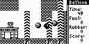
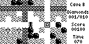
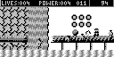
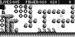
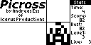
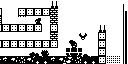
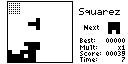
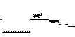
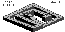
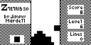

The following list contains our games and programs for the TI-85 graphing calculator from
.
Files are ordered alphabetically.
Games
 |
Author-Notes
|
Balloon (1.1)

The thrilling story of a balloon which has to find his way through enemys, traps, etc.
A fantastic game, well worth downloading!
And if you get tired of the included levels, you can make your own ones using a PC level editor!
| Andreas Ess
|
| 2K of free memory are required for level decompression |
| |
Boulder Dash (1.0)

A classic C64 game, now for your TI-85! Guide Rockford through caves filled with diamonds, fireflies, amoeba and other strange things!
The levels are from the original BoulderDash I!
| Jimmy Mårdell
|
| ZShell or Usgard required. |
| |
M.C. Mik (1.1u)

A fascinating jump 'n' run game with great graphics. These are the adventures of M.C. Mik, who has to find his way home through 5 levels with various backgrounds, cool enemies and more! New, free Usgard version of the ZShell classic!
Olov Gredvall wrote: I've tried your excellent game on my TI-85 and I've never seen anything like it!! It's great!!
| Andreas Ess
|
File itself needs 19K!
Grayscale graphics require 3 additional KB free
Usgard 1.5 or higher required |
| |
M.C. Mik #2 (1.0u)

The second episode of the first jump 'n' run game for the TI-85. These are the adventures of M.C. Mik, who has to find his way home through 5 levels with various backgrounds, cool enemies and more! This version features better collision detection than the original.
| Andreas Ess
|
File itself needs 17K!
Grayscale graphics require 3 additional KB free
Usgard 1.5 or higher required |
| |
Picross (1.1)

Picross is a little puzzler game for Usgard. You have to draw images according to numbers. This version contains 100 levels!!
| Andreas Ess
|
| Usgard 1.5 or higher required |
| |
Plainjump (1.1)
This is the second game Andreas Ess wrote for ZShell. You have to steer a marble over a plane with lots of holes.
This file contains old classic for Usgard, about 1K smaller, with better perspective, 8 instead of 4 tiles, external level editor and a nifty title picture by Johannes Rajala!
Damien Vardelle wrote: Congratulations and thank you very much for your realistic, speedy and captivating Plainjump!
| Andreas Ess
|
| Usgard 1.1 or higher required |
| |
Plainjump II (1.0)
The sequel to Plainjump. Now you may load up to 30 levels besides the built-in one, each level may have it's own saved game. Top 3 marbles, link playing feature(not included in 0.9b yet), cool grayscale graphics, 2 new plane types, etc. It's really worth to take a look at the beta.
| Andreas Ess
|
| Grayscale graphics, needs 3K free memory |
| |
Sqrxz (1.01)

The first smooth scrolling jump'n'run game for the TI-85! Guide Sqrxz - a bug - through tricky levels to his home. Avoid spiktraps, nasty blobs, dangerours hedgehogs and flying bats!
When you're tired of playing, you can create your own levels with the PC level editor!!
Josh Christensen wrote: Once again I have to say thanks for creating the absolute best game ever grace the ti85, sqrxz.
| Jimmy Mårdell
|
| Usgard 1.0 or higher required + about 2K of free memory. |
| |
Squarez (1.0)

A small, somewhat addictive game that reminds of Ttetris. The goal is to connect different pieces into 3x3 blocks as fast as possible. Not as easy as it sounds, because a lot of trash from previous pieces will be left on the screen.
| Jimmy Mårdell
|
| ZShell or Usgard required |
| |
uChip8 (0.1)

uChip8 lets you play old CHIP8 and SCHIP8 games on your TI-85 calculator. CHIP8 was a popular game interpreter in the late 70s. SCHIP8 is an advanced version used in the early 90s to program games for the HP48 calcs. In the ZIP you'll find some games and an assembler to code your own games.
| Andreas Ess
|
| Usgard 1.5 or higher required |
| |
Vertigo 85 (0.94)

In this very challenging game of skill, you have to guide a ball over an isometric 3D field to a gem stone. Vertigo features 50 levels, excellent grayscale graphics and a built-in editor.
| Matthew Shepcar
|
| 1.5K for grayscale graphics |
| |
XC-1701 II (1.0)
The long awaited sequel to the almost classic shoot-em up game for the TI-85, XC-1701!! Features 14 enemies, difficult bosses, bonus, savegame and loadable levels!! Make your own levels using XCEDIT by Stuntworks! JayEll64@aol.com wrote: Awesome game, incredible graphics and gameplay! And challenging! | Andreas Ess
|
Usgard 1.5 or higher required
About 1K necessary for level decompression |
| |
ZTetris (3.0)

Who doesn't know this classical game? All features you ever wanted are here: 20 levels, trash rows, teacher key, hiscore table, and linkplay.
Philip R Dignard wrote: Just wanted to say that your ZTetris kicks serious ass.
| Jimmy Mårdell
|
| Usgard 1.0 or higher required. |
| |